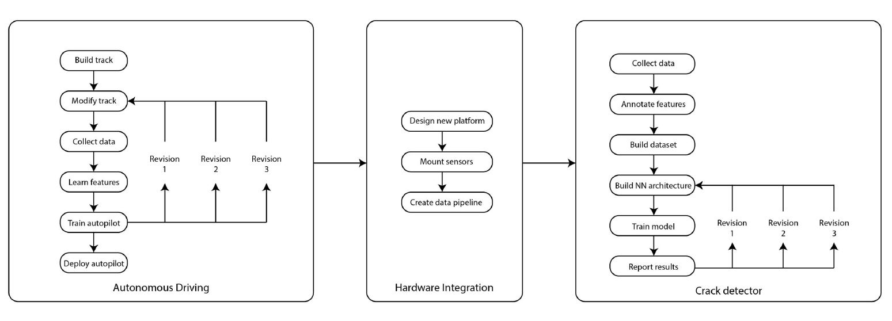
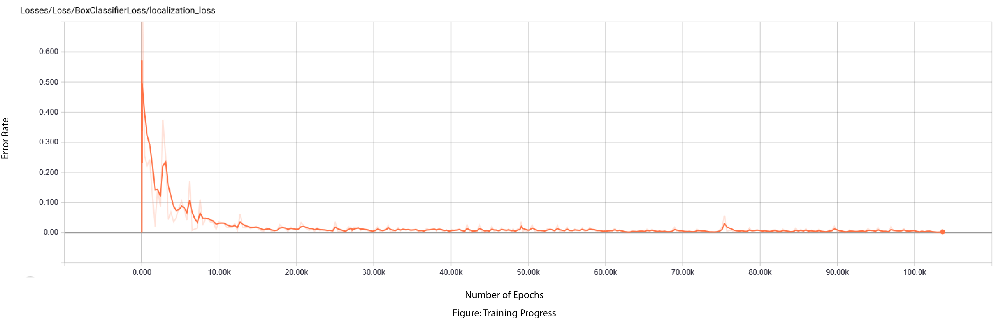

Pavement Crack Detection
For this project, the goal was to create an autonomous pavement crack detector. Basically a semi-autonomous vehicle that can maneuver its way while collecting images of pavement condition for crack detection. I started off with a 1/16th scale radio controlled vehicle and embedded a Raspberry Pi to drive the Electronic Speed Controls. I found a very interesting Open Source Project named 'Donkey Car' which runs on TensorFlow and allows users to train their own vehicles according to needs. Then I built a track in my lab and started training the autopilots. For training, I drove it around the track many times with the help of first person view in Donkey's local web server. It captures images and corresponding parameters like throttle and orientation. After training, I got a vehicle that can mimic my driving behavior around my lab circuit. It was definitely very interesting to see it coming to life.

Workflow Integration of Project
Training
Training and Results
The other main part of the project was to identify and report pavement surface cracks. I knew I had to do the inference part of it on-board. So on the next 1/10th scale iteration, I added a Nvidia Jetson TX2 on the vehicle which is equipped with Tegra X2 graphics processor and more than capable of doing very high speed inference. Then I created a video stream pipeline to get the high resolution images captured from TX2's on-board camera. After that, I annotated over 600 images to create training data for the model. Meanwhile, I was setting up the environments for object detection in TensorFlow on the R2 High Performance Cluster provided access by Smart Infrastructure Lab and Boise State University. After training, I am pretty happy with overall detection accuracy of about 90%. The images in the animation are actual outputs from the Object Detector model. Currently I am working on creating a model that can classify different types of cracks on pavement surface.